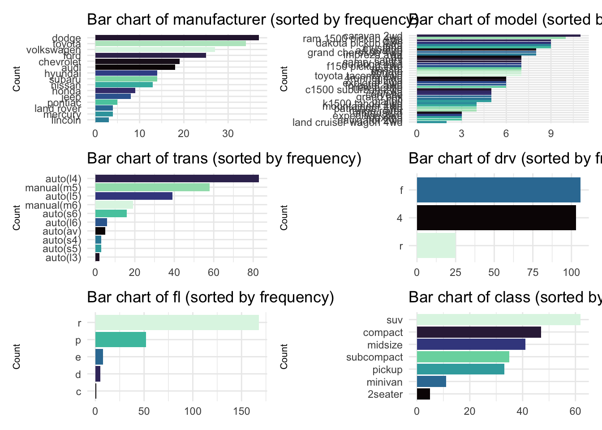

rescale01 <- function(x) {
x_clean <- dplyr::case_when(
x == -Inf ~ 0,
x == Inf ~ 1,
TRUE ~ x
)
rng <- range(x_clean[is.finite(x_clean)], na.rm = TRUE)
scaled <- (x_clean - rng[1]) / (rng[2] - rng[1])
return(scaled)
}The exercises from the functions below were pulled from the newest version of R for Data Science. Specifically, from Chapters 25 and 26.
Vector Functions
Question 1
The rescale01() function below performs a min-max scaling to standardize a numeric vector, but infinite values are left unchanged. Rewrite rescale01() so that -Inf is mapped to 0, and Inf is mapped to 1? *Hint: This seems like a great place for case_when()!
Q1 test cases
# should return: 0.0, 0.5, 1.0
rescale01(c(5, 10, 15)) [1] 0.0 0.5 1.0 # should return: 0.0, 1.0
rescale01(c(-Inf, 0.5, Inf)) [1] 0.0 0.5 1.0# should handle NA correctly
rescale01(c(NA, 2, 3)) [1] NA 0 1Question 2
Write a function that accepts a vector of birthdates and computes the age of each person in years.
age_in_years <- function(birthdates) {
as.numeric(difftime(Sys.Date(), as.Date(birthdates), units = "days")) %/% 365
}Q2 test cases
# should return ~age in years
age_in_years(c("2000-01-01", "1990-05-20")) [1] 25 35# should return 0
age_in_years(Sys.Date()) [1] 0Question 3
Write a function that computes the variance and skewness of a numeric vector. Feel free to look up the definitions on Wikipedia or elsewhere!
variance_and_skewness <- function(x) {
x <- x[is.finite(x)]
m <- mean(x)
n <- length(x)
var_x <- sum((x - m)^2) / (n - 1)
skew_x <- sum((x - m)^3) / ((n - 1) * sd(x)^3)
list(variance = var_x, skewness = skew_x)
}Q3 test cases
# symmetric data (low skew)
variance_and_skewness(c(1, 2, 3, 4, 5)) $variance
[1] 2.5
$skewness
[1] 0# strong positive skew
variance_and_skewness(c(1, 2, 2, 3, 100))$variance
[1] 1921.3
$skewness
[1] 1.340768# should ignore NA
variance_and_skewness(c(1, NA, 3, 5)) $variance
[1] 4
$skewness
[1] 0Question 4
Write a function called both_na() which takes two vectors of the same length and returns the number of positions that have an NA in both vectors.
both_na <- function(x, y) {
sum(is.na(x) & is.na(y))
}Q4 test cases
# should return 1
both_na(c(1, NA, 3, NA), c(NA, NA, 3, 4)) [1] 1# should return 2
both_na(c(NA, NA), c(NA, NA)) [1] 2# should return 0
both_na(1:3, 4:6) [1] 0Data Frame Functions
Question 5
Insert the data frame function you wrote from Lab 6 (either Exercise 1 or Exercise 2).
library(dplyr)
library(rlang)
remove_outliers <- function(data, ..., sd_thresh = 3){
vars <- enquos(...)
filtered_data <- data
for (var in vars) {
var_name <- quo_name(var)
if (!is.numeric(pull(filtered_data, !!var))) {
warning(glue::glue("Variable '{var_name}' is not numeric."))
next
}
var_mean <- mean(pull(filtered_data, !!var), na.rm = TRUE)
var_sd <- sd(pull(filtered_data, !!var), na.rm = TRUE)
filtered_data <- filtered_data %>%
filter(abs((!!var - var_mean) / var_sd) < sd_thresh)
}
return(filtered_data)
}Q5 test cases
library(tidyverse)
# Multiple numeric vars
remove_outliers(diamonds, price, x, y, z)# A tibble: 52,673 × 10
carat cut color clarity depth table price x y z
<dbl> <ord> <ord> <ord> <dbl> <dbl> <int> <dbl> <dbl> <dbl>
1 0.23 Ideal E SI2 61.5 55 326 3.95 3.98 2.43
2 0.21 Premium E SI1 59.8 61 326 3.89 3.84 2.31
3 0.23 Good E VS1 56.9 65 327 4.05 4.07 2.31
4 0.29 Premium I VS2 62.4 58 334 4.2 4.23 2.63
5 0.31 Good J SI2 63.3 58 335 4.34 4.35 2.75
6 0.24 Very Good J VVS2 62.8 57 336 3.94 3.96 2.48
7 0.24 Very Good I VVS1 62.3 57 336 3.95 3.98 2.47
8 0.26 Very Good H SI1 61.9 55 337 4.07 4.11 2.53
9 0.22 Fair E VS2 65.1 61 337 3.87 3.78 2.49
10 0.23 Very Good H VS1 59.4 61 338 4 4.05 2.39
# ℹ 52,663 more rows# Skips non-numeric gracefully
remove_outliers(diamonds, price, color)# A tibble: 52,734 × 10
carat cut color clarity depth table price x y z
<dbl> <ord> <ord> <ord> <dbl> <dbl> <int> <dbl> <dbl> <dbl>
1 0.23 Ideal E SI2 61.5 55 326 3.95 3.98 2.43
2 0.21 Premium E SI1 59.8 61 326 3.89 3.84 2.31
3 0.23 Good E VS1 56.9 65 327 4.05 4.07 2.31
4 0.29 Premium I VS2 62.4 58 334 4.2 4.23 2.63
5 0.31 Good J SI2 63.3 58 335 4.34 4.35 2.75
6 0.24 Very Good J VVS2 62.8 57 336 3.94 3.96 2.48
7 0.24 Very Good I VVS1 62.3 57 336 3.95 3.98 2.47
8 0.26 Very Good H SI1 61.9 55 337 4.07 4.11 2.53
9 0.22 Fair E VS2 65.1 61 337 3.87 3.78 2.49
10 0.23 Very Good H VS1 59.4 61 338 4 4.05 2.39
# ℹ 52,724 more rows# Custom SD threshold
remove_outliers(diamonds, price, x, y, z, sd_thresh = 2)# A tibble: 48,955 × 10
carat cut color clarity depth table price x y z
<dbl> <ord> <ord> <ord> <dbl> <dbl> <int> <dbl> <dbl> <dbl>
1 0.23 Ideal E SI2 61.5 55 326 3.95 3.98 2.43
2 0.21 Premium E SI1 59.8 61 326 3.89 3.84 2.31
3 0.23 Good E VS1 56.9 65 327 4.05 4.07 2.31
4 0.29 Premium I VS2 62.4 58 334 4.2 4.23 2.63
5 0.31 Good J SI2 63.3 58 335 4.34 4.35 2.75
6 0.24 Very Good J VVS2 62.8 57 336 3.94 3.96 2.48
7 0.24 Very Good I VVS1 62.3 57 336 3.95 3.98 2.47
8 0.26 Very Good H SI1 61.9 55 337 4.07 4.11 2.53
9 0.22 Fair E VS2 65.1 61 337 3.87 3.78 2.49
10 0.23 Very Good H VS1 59.4 61 338 4 4.05 2.39
# ℹ 48,945 more rowsFor Questions 6 - 10 you will write different functions which work with data similar to the nycflights13 data.
Question 6
Write a filter_severe() function that finds all flights that were cancelled (i.e. is.na(arr_time)) or delayed by more than an hour.
filter_sever <- function(flights) {
dplyr::filter(flights, is.na(arr_time) | dep_delay > 60)
}Q6 test case
library(nycflights13)
filter_sever(flights) # A tibble: 35,138 × 19
year month day dep_time sched_dep_time dep_delay arr_time sched_arr_time
<int> <int> <int> <int> <int> <dbl> <int> <int>
1 2013 1 1 811 630 101 1047 830
2 2013 1 1 826 715 71 1136 1045
3 2013 1 1 848 1835 853 1001 1950
4 2013 1 1 957 733 144 1056 853
5 2013 1 1 1114 900 134 1447 1222
6 2013 1 1 1120 944 96 1331 1213
7 2013 1 1 1301 1150 71 1518 1345
8 2013 1 1 1337 1220 77 1649 1531
9 2013 1 1 1400 1250 70 1645 1502
10 2013 1 1 1505 1310 115 1638 1431
# ℹ 35,128 more rows
# ℹ 11 more variables: arr_delay <dbl>, carrier <chr>, flight <int>,
# tailnum <chr>, origin <chr>, dest <chr>, air_time <dbl>, distance <dbl>,
# hour <dbl>, minute <dbl>, time_hour <dttm>Question 7
Write a summarize_severe() function that counts the number of cancelled flights and the number of flights delayed by more than an hour.
summarize_sever <- function(flights) {
dplyr::summarise(
flights,
cancelled = sum(is.na(arr_time)),
delayed_over_hour = sum(dep_delay > 60, na.rm = TRUE)
)
}Q7 test case
summarize_sever(flights)# A tibble: 1 × 2
cancelled delayed_over_hour
<int> <int>
1 8713 26581Question 8
Modify your filter_severe() function to allow the user to supply the number of hours that should be used to filter the flights that were cancelled or delayed.
filter_severe <- function(flights, hours = 1) {
delay_limit <- hours * 60
dplyr::filter(flights, is.na(arr_time) | dep_delay > delay_limit)
}Q8 test case
filter_severe(flights, hours = 2)# A tibble: 18,350 × 19
year month day dep_time sched_dep_time dep_delay arr_time sched_arr_time
<int> <int> <int> <int> <int> <dbl> <int> <int>
1 2013 1 1 848 1835 853 1001 1950
2 2013 1 1 957 733 144 1056 853
3 2013 1 1 1114 900 134 1447 1222
4 2013 1 1 1540 1338 122 2020 1825
5 2013 1 1 1815 1325 290 2120 1542
6 2013 1 1 1842 1422 260 1958 1535
7 2013 1 1 1856 1645 131 2212 2005
8 2013 1 1 1934 1725 129 2126 1855
9 2013 1 1 1938 1703 155 2109 1823
10 2013 1 1 1942 1705 157 2124 1830
# ℹ 18,340 more rows
# ℹ 11 more variables: arr_delay <dbl>, carrier <chr>, flight <int>,
# tailnum <chr>, origin <chr>, dest <chr>, air_time <dbl>, distance <dbl>,
# hour <dbl>, minute <dbl>, time_hour <dttm>Question 9
Write a summarize_weather() function that summarizes the weather to compute the minimum, mean, and maximum, of a user supplied variable.
summarize_weather <- function(weather, variable) {
variable <- rlang::enquo(variable)
dplyr::summarise(
weather,
min = min(!!variable, na.rm = TRUE),
mean = mean(!!variable, na.rm = TRUE),
max = max(!!variable, na.rm = TRUE)
)
}Q9 test case
summarize_weather(weather, temp)# A tibble: 1 × 3
min mean max
<dbl> <dbl> <dbl>
1 10.9 55.3 100.summarize_weather(weather, wind_speed) # A tibble: 1 × 3
min mean max
<dbl> <dbl> <dbl>
1 0 10.5 1048.Question 10
Write a standardize_time() function that converts the user supplied variable that uses clock time (e.g., dep_time, arr_time, etc.) into a decimal time (i.e. hours + (minutes / 60)).
standardize_time <- function(time_vec) {
hours <- time_vec %/% 100
minutes <- time_vec %% 100
hours + minutes / 60
}Q10 test cases
# should return 9.00 and 14.5
standardize_time(c(900, 1430)) [1] 9.0 14.5standardize_time(c(0, 30, 100))[1] 0.0 0.5 1.0Plotting Functions
You might want to read over the Plot Functions section of R for Data Science
Question 11
Build a sorted_bars() function which:
- takes a data frame and a variable as inputs and returns a vertical bar chart
- sorts the bars in decreasing order (largest to smallest)
- adds a title that includes the context of the variable being plotted
Hint 1: The fct_infreq() and fct_rev() functions from the forcats package will be helpful for sorting the bars! Hint 2: The englue() function from the rlang package will be helpful for adding a variable’s name into the plot title!
library(ggplot2)
library(forcats)
library(rlang)
library(viridis)
sorted_bars <- function(data, var) {
var <- enquo(var)
ggplot(data, aes(y = fct_infreq(!!var) %>% fct_rev(), fill = !!var)) +
geom_bar() +
labs(
x = NULL,
y = "Count",
title = glue::glue("Bar chart of {quo_name(var)} (sorted by frequency)")
) +
theme_minimal() +
scale_fill_viridis_d(option = "G") +
theme(axis.title = element_text(size = 8),
legend.position = "none")
}Iteration
Alright, now let’s take our plotting function and iterate it!
Question 12
Make a sorted barplot for every character variable in the mpg dataset (built into ggplot2).
library(purrr)
library(dplyr)
char_vars <- mpg %>% select(where(is.character)) %>% names()
plots <- map(char_vars, ~ sorted_bars(mpg, .data[[.x]]))Q11 and Q12 test
library(patchwork)
wrap_plots(plots, ncol = 2)